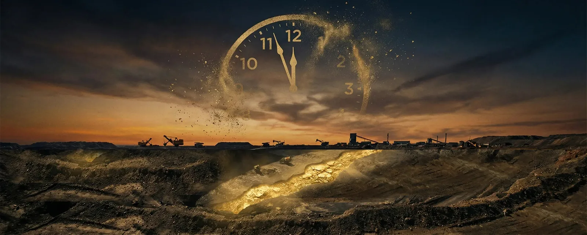
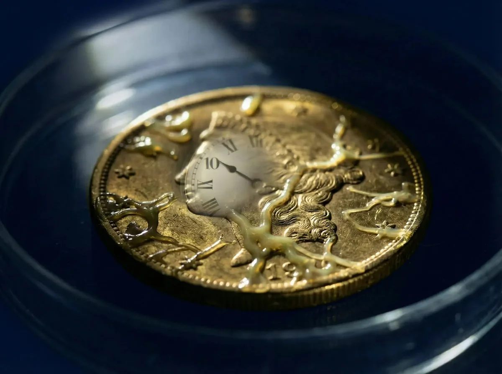

Bacteria, Gold & The 10th Hour
One Moment.
Over decades in this industry, I have watched financial experts parade across television screens and conference stages. Dot-coms, housing, crypto. Each one was proclaimed the next great investment. They rose with fanfare, and fell with silence.
But two truths have stayed with me through all of it. And right now, they are converging.
First: Gold has maintained its purchasing power through every empire, every currency collapse, every war and revolution in recorded human history.
Second: The most powerful forces in nature do not announce themselves. They build, invisibly and relentlessly, until the moment they cannot be ignored.
What I want to show you is how a microscopic bacterium, a $20 gold coin from 1825, and the gap between paper gold and physical metal all point to the same idea: the trends that matter most are easy to overlook until they are far along.
The Bacterium That Will Change How You See Gold
Scientists studying Vibrio natriegens [VIB-ree-oh nay-tree-EH-jenz], a marine bacterium, discovered something extraordinary. With a doubling time of just 9.26 minutes, a single cell placed in a one-gallon jar would fill that jar completely in under 10 hours.
But here is the part that changes everything:
For the first 9 hours, about 90% of the timeline, almost nothing appears to be happening. The jar looks nearly empty. Then the last stretch fills it fast.

The Bacteria Timeline
Gold has held its role as a store of value across thousands of years of recorded history. The pages that follow lay out why so many people are paying attention to it now.
What a $20 Gold Coin Tells You About Real Money
In 1825, a $20 U.S. gold double eagle, one troy ounce, could buy a man a finely tailored suit, a quality rifle, a celebratory dinner, and still leave change. One hundred years later, in 1925, that same coin still purchased all of it. The purchasing power had not moved.
By 2024, that original $20 coin, now worth approximately $2,000 in gold content, still buys you a fine suit, a quality firearm, and a very good dinner. Two hundred years. The same purchasing power. Through the Civil War, two World Wars, the Great Depression, and the inflation of the 1970s.
A $20 gold coin in 1825 bought a suit, a rifle, and a meal. That same coin in 2024 still buys you all three, and more.
Gold Is Running Out. And the Clock Is Accelerating.
According to the U.S. Geological Survey's January 2025 Mineral Commodity Summaries, proven gold reserves total approximately 64,000 metric tonnes worldwide. The World Gold Council puts the figure at 54,770 tonnes. Both agree on the implication: 18 to 20 years of supply remaining at current mining rates.
With gold near record highs in recent months, mining is intensifying and lower-grade ores are being worked. Reserves are still finite, and they are drawn down year after year.
Nearly three-quarters of all accessible gold has already been extracted. We are mining the bottom of the barrel. What remains is harder to reach, and finite. There is no second Earth to mine.
100 Paper Claims for Every Real Ounce
Here is something worth understanding: in today's market, the paper claims on gold (ETFs, futures contracts, derivatives, and unallocated accounts) far outnumber the physical metal available to deliver against them. They could not all be settled in real gold at the same time.
On the COMEX, the main U.S. gold futures exchange, the paper claims outstanding have at times far exceeded the metal available for immediate delivery from its vaults.
This is not speculation. It is arithmetic. And as demand for physical gold rises and the paper system strains, the repricing event will not be gradual. It will be a doubling of the jar.
Where Things Stand Today
Gold has climbed sharply over the past year, trading near record highs above $4,000 per ounce in recent months. Central banks have been buying gold at a record pace, and a number of nations have been diversifying away from U.S. Treasuries into physical metal.
Some analysts who study long economic cycles point to a recurring historical pattern: heavily indebted, reserve-currency powers tend to see their currency lose value over time, with gold often revaluing higher as the system rebalances. Whether or not that pattern repeats this time, the underlying pressures on the dollar are real.
No one can predict gold's price, and anyone who promises a specific future number is guessing. What can be said is simpler: the supply of gold is finite, demand from central banks and savers has been strong, and the dollar has a long record of losing purchasing power. Those are the reasons many people choose to hold some physical gold. They are not a forecast of what any given year will bring. As with any asset, the price of gold can rise or fall, and past performance does not guarantee future results.
Making Your Decision
If you are in your 50s, 60s, 70s, or 80s, you have something younger investors do not: you have seen this pattern before. You remember dot-coms. You remember 2008. You know what it feels like to watch an opportunity arrive, hesitate, and watch it pass.
If you have been thinking about owning physical gold, the cost of waiting comes down to this: whatever the metal does next, you are not the one holding it. Many people would rather decide on their own terms than react to a headline later.
The bacteria jar is a useful way to think about timing. The people who act before a trend is obvious tend to have more choices than the ones who wait for the headlines to confirm it. There is no perfect moment, and no one can promise you one. The point is simply to decide deliberately, on your own terms, rather than in a hurry later.
Recent Publications
The Story Behind the Mission
From a grocery-store checkout line to a company built on protecting what families earn.
“Gold Always Holds Value” on 77 WABC
Joseph Malcarne makes the case for a precious metals strategy on 77 WABC’s miniCAST with John Catsimatidis.
Bacteria, Gold & The 10th Hour
How a microscopic bacterium, an 1825 gold coin, and the gap between paper gold and physical metal all point to the same idea.
The Question Is Not Whether to Hold Gold.
The question is whether you will act before the jar fills. Speak with our team today. No pressure, no obligation. Just the facts you need to protect what you have built.